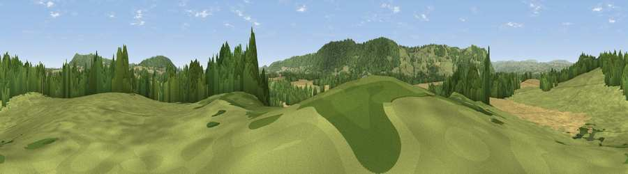

Viewpoint near Moccas
#15936 in England · top 48% of its area beats it · near MoccasThe view, rendered

A 360° render of this exact spot computed from the terrain model, tree cover and land cover — summer colours, afternoon light, calibrated against photographs of famous viewpoints. Real trees, hedges and buildings will differ in detail.
The panorama
Grey silhouette: terrain skyline in each direction (720 bearings, Earth curvature and refraction included). Dashed green: skyline with trees (+15 m) and buildings (+8 m) as obstacles. Blue strip: how far the ground is visible on each bearing.
Where the view opens
Wedge length = distance to the farthest visible ground on that bearing (vegetation-aware). Rings at 10, 25 and 50 km.
What fills the view
37% woodland · 35% cropland · 26% grassland · 2% water
Angular shares of the visible panorama (visual magnitude), not map area. Landscape diversity 0.51 (0–1 Shannon).
Key numbers
More beautiful places nearby
The staircase of upgrades: each row has a higher view potential than everything closer. Driving times are estimates from straight-line distance, calibrated against real road routing — check an actual route before setting out.
| Place | Direction | Drive | Score |
|---|---|---|---|
| Oaker's Hill | NNW · 2 km | ~4 min | 67.2 |
| Viewpoint near Moccas | SSW · 3 km | ~8 min | 75.9 |
| Bredwardine Hil | W · 3 km | ~8 min | 77.1 |
| Viewpoint near Middlewood | W · 4 km | ~10 min | 79.4 |
| Merbach Hill | W · 5 km | ~11 min | 81.1 |
| Viewpoint near Craswall | SW · 13 km | ~24 min | 81.5 |
| Garway Hill | SSE · 21 km | ~35 min | 84.6 |
| Herefordshire Beacon | E · 41 km | ~60 min | 85.8 |
52.09527, -2.94549 · source: screening · position refined by local search. Computed location — check access rights before visiting.